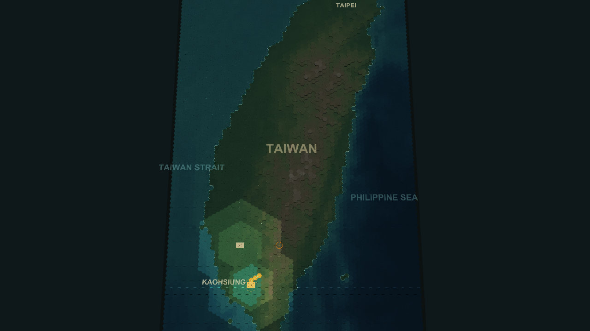
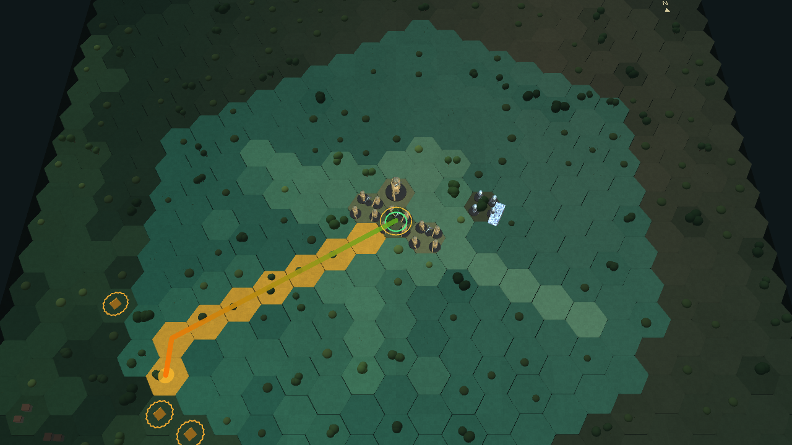
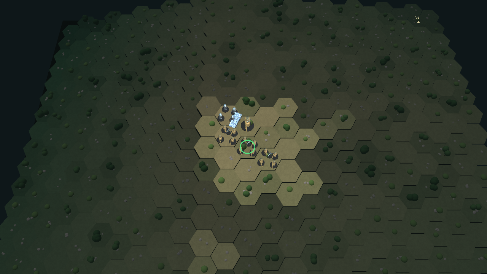
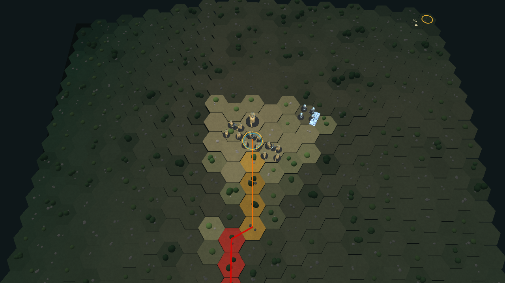
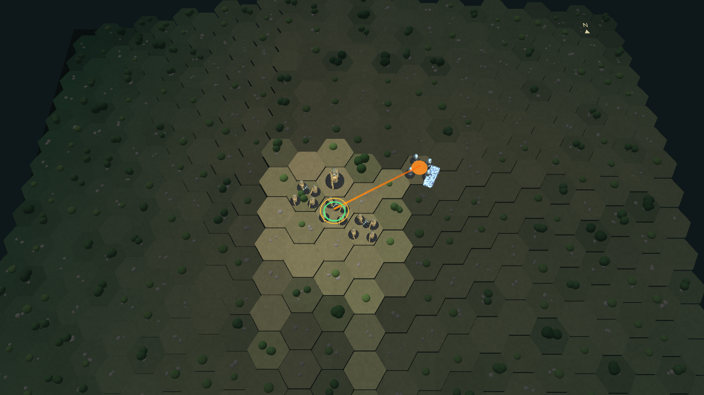
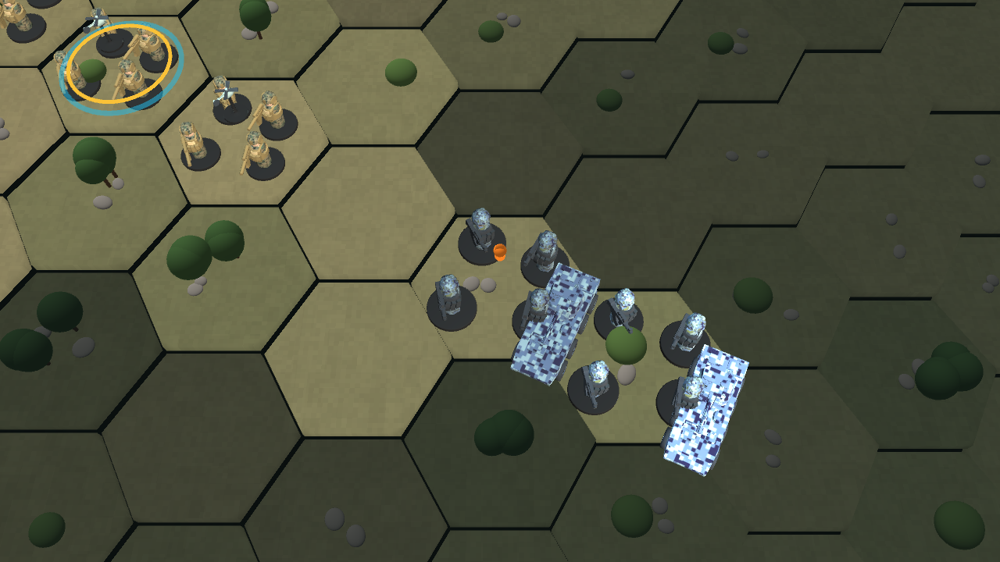

1. What kind of game is this?
Always Faithful is a turn-based command game played at two connected scales. On the operational map, each hex is roughly 4 kilometers across and you maneuver battalions around Taiwan. When opposing forces meet, you can open a detailed tactical battlefield, where each hex represents 250 meters and each friendly counter is a platoon.
You do not need to be a military expert. The heart of the game is simple: find the enemy before they find you, use terrain to approach safely, suppress defenders, and move another platoon into the decisive position. Your battalion fights as a team; a lone counter is rarely the answer.
Operational command
Move battalions, scout uncertain areas, manage contacts, and choose where to accept battle.
Tactical command
Lead four to five platoons, manage action points and ammunition, and complete a mission on a local battlefield.
Persistent consequences
Strength, campaign state, platoon experience, and battle results can carry forward.
2. Your first battle in five minutes
- Choose a friendly force. On the Taiwan map, select a USMC battalion. Its available actions and information appear in the interface.
- Find or approach a contact. Operational reconnaissance helps reveal uncertain enemy locations. A contact may be incomplete or stale, so do not treat every marker as perfect information.
- Open the local map. Select a land hex and choose Open 250m Map. If that hex contains an operational contact, use Resolve Contact to fight it. A hex without a contact produces an enemy-free local map.
- Take command of the battalion. In the island campaign there is no force picker: the selected battalion's complete, prearranged platoon roster enters the local map, along with the exact enemy battalion behind a resolved contact.
- Deploy. Place your platoons inside the friendly deployment zone, shown by the teal boundary. Spread out enough to avoid crowding while keeping platoons close enough to support one another.
- Scout before shooting. Select a platoon and use Recon or Inspect LOS. Direct fire needs a current, observed enemy—not just a rumor of one.
- Use two platoons together. Have one platoon suppress or smoke the threat; move another by a covered route. Finish with deliberate fire or a close assault only when the defender is weakened.
- End the turn. The enemy acts after you. Check the event log, reassess the objective, and repeat until the mission ends. The After Action Report explains the outcome.
3. Controls at a glance
| What you want to do | Control |
|---|---|
| Select a friendly platoon or a map hex | Left-click. You can also select a platoon from the company list. |
| Open a platoon's orders | Right-click the friendly platoon. This opens only its order menu and does not change the current H HUD state. Hover over any order—including an unavailable one—for a plain-language explanation, then left-click an available order. |
| Next friendly platoon | N |
| Next platoon that can still act | Tab |
| Pan the map | WASD, arrow keys, or Shift + middle-mouse drag |
| Zoom | Mouse wheel |
| Orbit the camera | Middle-mouse drag |
| Rotate left/right | Q / E |
| Tilt camera | Page Up / Page Down |
| Reset camera | R by default |
| Hide or restore the side HUD | H, or click either slim HUD edge tab while hidden. Unit order menus remain independently available. |
| Cancel the current order | Esc by default |
The Cancel and Reset Camera keys can be remapped in Settings.
4. Commanding on the operational map
The operational board covers Taiwan in 64 by 104 hexes. Here, you command formations rather than individual platoons. Select a USMC battalion to see where it can move and what it currently knows.

Movement and reconnaissance
Movement positions the battalion for the campaign; reconnaissance spends scarce action points to look outward. Enemy information is intentionally imperfect. A marker can begin as a vague contact, become better identified, and later turn stale if you lose track of it.
Entering a tactical battle
- Open 250m Map examines a selected land hex at tactical scale.
- Resolve Contact converts an operational enemy contact into a local engagement.
- Opening a quiet hex is still useful for learning or inspection, but it will not invent an enemy force.
- Returning from battle restores the operational view and preserves campaign results.
The operational briefing, order of battle, support cards, and unit information panels give the wider context. When you end the operational turn, PLA formations take their turn and the contact picture may change.
5. Your tactical force
In the island campaign, the operational counter and tactical force are the same formation at two scales. The game does not ask you to invent a force after contact. 1/4 brings nine rifle platoons, two weapons platoons, and its attached combat engineer platoon. 2/4 brings nine rifle platoons, two weapons platoons, and its attached scout platoon. Prior platoon losses remain attached to those named units in later battles.
The smaller four-platoon packages below belong only to an explicitly standalone Quick Battle:
| Company | Specialist | Why choose it? |
|---|---|---|
| Balanced | Weapons Platoon | A dependable all-purpose force. It begins with 8 ammunition and can resupply nearby platoons. |
| Recon | Recon Platoon | Better information and mobility. The Recon Platoon has 10 action points and pays only 2 AP for Recon instead of 3. |
| Assault | Combat Engineer Platoon | Detects and breaches obstacles and attacks strongpoints. It begins with 9 AP and 5 engineer stores. |
With the Miniature counter style, specialist attachments are also easy to recognize: the Weapons Platoon is represented by M249 and MAAWS gunners, while the Combat Engineer Platoon uses a technical command group with an EW operator, officer, and riflemen. These figure choices are visual identification; the rules and statistics listed above are unchanged.
A standalone setup screen may also let you choose the mission, weather, light, enemy difficulty, turn limit, and tutorial. These are explained under Quick Battle. Campaign contacts skip this screen because the island situation has already supplied those facts.
Deployment
Place every friendly platoon within 3 hexes of the friendly entry area. The teal ring marks this deployment zone; the gold ring marks the main objective. A green objective ring means USMC forces currently control it.
During the battle, use the formation list to jump directly to a platoon. N cycles through all friendly platoons, while Tab skips to one that still has an action available.

6. Reading a platoon
The command card summarizes the selected formation. The most important values are separate on purpose: a platoon can be physically strong but temporarily pinned, or calm but badly depleted.
| Value | Plain-language meaning |
|---|---|
| Strength 0–100 | People, weapons, and fighting power still available. Strength loss lasts beyond the immediate exchange and may carry into later battles. |
| Cohesion / Suppression 0–100 | How badly the platoon is pinned or disorganized right now. Higher suppression is worse. It recovers more readily than strength. A newly Reduced platoon attempts to fall back automatically. |
| AP | Action Points: the platoon's time and attention for this turn. Movement, fire, reconnaissance, and special actions spend AP. |
| Ammo | Direct-fire ammunition. Most attacks spend 1; Rapid attacks and Area Suppression spend 2. |
| Supply | General stores used for recovery and transfer actions. Reorganize spends 2; a Weapons Platoon spends 2 to resupply another unit. |
| Engineer stores | Specialized breaching material carried by the Combat Engineer Platoon. Hasty Breach spends 1; Deliberate Breach spends 2. |
| RP | Reaction Points reserved for automatic fire during enemy movement. Each reaction costs 1 RP. |
| Position | Entrenchment level, from 0 to 2. Better positions make the platoon harder to hit. |
| Facing | The direction the platoon is prepared to watch. It strongly affects reaction fire. |
Suppression states
| Suppression | Status | Effect |
|---|---|---|
| 0–24 | Ready | Fully able to act. |
| 25–49 | Suppressed | Under pressure, but still functioning. |
| 50–74 | Disrupted | Cannot fire. |
| 75–100 | Reduced | Cannot move or fire normally. It immediately attempts a one-hex fallback; if trapped it routs or may surrender. |
Suppression naturally falls by 15 each turn. Rally costs 1 AP and removes 40, making it the fast answer to a platoon that is pinned but otherwise healthy. Reorganize is slower and more expensive, but restores both strength and cohesion.
7. Ground, sight, and the intelligence picture
Terrain and cover
The tactical map contains Open, Rough, Highland, and Water terrain. Water is impassable. Cover can be Light, Medium, or Heavy; stronger cover makes a target harder to hit and can interrupt sight through a hex. Cover changes protection and visibility, not the movement price by itself.
Lines of sight
A line of sight is Clear, Obscured, or Blocked. Use Inspect LOS to examine a particular line, and LOS Overlay to understand the selected platoon's wider view. Smoke can deliberately obscure sight for two turns.


Four levels of enemy knowledge
- Hidden: you do not know the enemy is there.
- Contact: something has been reported, but details are poor.
- Identified: you have a better idea of what the formation is.
- Observed: the platoon is currently located well enough for direct fire.
Your Tactical Intelligence panel combines what the whole company knows. An old report may become stale. Direct fire requires a currently observed enemy; clicking a faded contact is not enough.
Recon
Recon searches out to 12 hexes (3 km), does not require line of sight, reveals the exact hex for two turns, and improves the contact by one information level. It normally costs 3 AP; the specialist Recon Platoon pays 2 AP.
Weather and light reduce normal observation. Clear daylight offers the best view. Rain and dawn/dusk shorten it; storm and night shorten it much more. The combined penalty can never reduce observation below 2 hexes.
Concealment and searching
A stationary platoon in Medium or Heavy cover can spend 2 AP to Hide. A concealed platoon is harder to classify and prepares an ambush. Moving or firing reveals it. An enemy can also spend 2 AP to Search/Clear an adjacent 250-meter hex; if a concealed formation occupies that hex, it is exposed.
8. Movement, reactions, and facing
Select Posture to cycle the selected platoon's movement style before moving.
| Posture | What it gives you | What it costs you |
|---|---|---|
| Quick | Roughly twice the planning reach and about half the normal route charge. | Worst fire-after-moving penalty (−20) and gives up all reaction points. Use it to cross safe ground or race for position. |
| Tactical | The normal balance of movement, fire, and readiness. | A moderate fire-after-moving penalty (−10). This is the dependable default. |
| Bounding | Best fire-after-moving performance (−5) and retains or builds reaction points. | Shorter planning reach and movement costs about half again as much. Use it near the enemy. |
Reaction policy
Every platoon can begin a turn with up to 2 Reaction Points. Select Reaction to cycle its automatic-fire rule:
- Weapons Hold: never fire automatically. Useful for concealment, ammunition discipline, or an ambush you do not want spoiled.
- Return Fire: react only after the enemy has fired on this platoon during the current turn.
- Weapons Free: react normally when an eligible enemy moves within range and sight.
A reaction shot costs 1 RP, reaches up to 5 hexes (1,250 m), and is less accurate than prepared fire. A miss allows movement to continue; suppression or a hit stops the moving unit.
Face the threat
Face Sector turns a platoon among six directions and costs no AP. Reaction fire into the forward sector receives a +10 advantage. A flank shot suffers −10; a rear reaction suffers −25. Before ending your turn, point each exposed platoon toward the most likely enemy approach.
Hidden obstacles
PLA defenses can include abstract 250-meter minefields, wire belts, and roadblocks. They begin hidden, so an unknown obstacle does not appear in the route preview or secretly increase its displayed AP cost. If a platoon enters one, it stops in that hex and identifies the obstacle. Minefields can reduce strength and add suppression; wire adds suppression; roadblocks stop the move without causing casualties.
Once discovered, an enemy obstacle receives a red map marker and appears on the hex-inspection card; friendly defenses are blue. Future routes correctly include the additional hostile-obstacle cost: +2 AP for a known minefield or wire belt and +3 AP for a roadblock. A green LANE marker means the obstacle has been breached and can be crossed safely.
Engineer breaching
The Combat Engineer Platoon can use Detect/Mark on adjacent ground for 2 AP. The sweep spends its AP even if the hex is clear; when an obstacle is present, it identifies and marks it without entering the danger area. A marked adjacent obstacle can then be breached:
- Hasty Breach: 2 AP and 1 engineer store. It has a 70% chance to open the lane. Failure suppresses the engineers.
- Deliberate Breach: 4 AP and 2 engineer stores. It always opens the lane when the order is otherwise legal.
A successful breach is permanent for that battle. Friendly routes and enemy planning recognize the safe lane. Engineers also gain a +20 close-assault advantage against defenders in Medium or Heavy cover or a fighting position.
Withdrawing and forced fallback
Withdraw spends 2 AP and the remainder of the platoon's activation to move one hex farther from the nearest enemy, recover 10 suppression, and break contact. This is a controlled movement you choose. Forced fallback is different: when a platoon becomes Reduced, it automatically seeks an empty adjacent hex farther from danger, preferring cover. A trapped platoon routs in place; if it is trapped beside the enemy, it surrenders.
9. Fire, suppression, smoke, and assault
Direct fire
Select Attack to cycle the attack profile, then use Direct Fire and select a currently observed enemy. The profile is a commitment choice, not a separate weapon.


| Profile | Cost | Best use |
|---|---|---|
| Hasty | 1 AP, 1 ammo | A quick shot when time matters. Less accurate and less suppressive; a hit removes 10 strength. |
| Standard | 2 AP, 1 ammo | The balanced everyday attack; a hit removes 20 strength. |
| Deliberate | 3 AP, 1 ammo | A carefully prepared attack with +15 accuracy and greater suppression; a hit removes 25 strength. |
| Rapid | 3 AP, 2 ammo | Heavy fire with +5 accuracy and the greatest suppression; a hit removes 20 strength. Effective, but hungry for ammunition. |
Accuracy also depends on movement, range, cover, line of sight, weather, light, and the shooter's condition. Rain gives a −8 fire penalty; storm −15; dawn/dusk −6; night −18. Weather and light penalties add together.
Area Suppress
Spend 3 AP and 2 ammo to attack a land hex within 6 hexes (1,500 m). This order can pin an enemy at a suspected location even when you lack the current observation required for direct fire. It is primarily a control tool, not an efficient way to destroy strength.
Deploy Smoke
Spend 2 AP to place smoke within 2 hexes (500 m). Smoke lasts two turns and obscures lines of sight. Put it between the enemy and the platoon that must move. Remember that it can also block your own supporting fire.
Planned supporting fires
Call Fire no longer strikes immediately. First use Fire Type to choose HE, Smoke, or Illumination, then spend 3 AP and select a land hex within 12 hexes (3 km). An orange aim-point marker shows the ammunition type and countdown. The mission arrives at the start of your next turn, after the enemy has had one phase to react.
- HE: suppresses and damages every friendly or enemy platoon within one hex of the actual impact. Check the DANGER CLOSE warning before confirming.
- Smoke: screens the impact hex and its neighbors for two turns.
- Illumination: lights a three-hex radius for two turns, improving contacts with an unblocked line of sight to Observed. It is especially valuable at night.
Scatter is smallest against an Observed contact and largest against an unseen hex. The Recon Platoon is a better observer. Adjust Fire spends 1 AP to register the last requested point; repeat missions there scatter less. Company fire support carries four rounds and cannot accept another mission until its two-turn reload interval has passed.
Weapons Platoon mortars
The Weapons Platoon carries four separate mortar rounds. Spend 2 AP on Set Up Mortars before firing. A mortar mission costs another 2 AP, reaches 2–6 hexes (500–1,500 m), and arrives next turn. The selected Fire Type chooses mortar HE or smoke; illumination is not available to the organic mortars. Moving automatically displaces the tubes, so they must be set up again at the new position.
Close Assault
An adjacent platoon may spend 4 AP to assault. Success depends heavily on the suppression of both sides and the defender's cover. A successful assault removes 35 defender strength, displaces the defender, and leaves it Reduced. A failed assault gives the attacker 2 suppression and costs it 10 strength.
10. Positions, recovery, supply, and support
Entrench
Spend 4 AP before the platoon has moved or fired to improve its position by one level, up to level 2. The position faces the same sector as the platoon when built. Each level gives an attacker a −12 hit penalty from the front, half that protection from a flank, and no position protection from the rear. Moving abandons it.
Rally or reorganize?
- Rally costs 1 AP and removes 40 suppression. Use it for a healthy platoon that simply needs to get its head back up.
- Reorganize costs 4 AP and 2 supply, and is unavailable after moving or firing. It restores 15 strength and removes 40 suppression. Use it when the platoon needs real rebuilding, not just encouragement.
Resupply
A platoon beside a Weapons Platoon can spend 2 AP to receive supplies. The Weapons Platoon spends 2 of its own supply; the recipient gains 3 supply and 3 ammunition, up to its normal limits. Protect that Weapons Platoon—it is both a combat formation and your local logistics hub.
Call for Fire
The detailed planned-fire rules are in the combat section above. In short: spend 3 AP to request one of four company-support rounds within 12 hexes. It arrives next turn, may scatter, and then enters its reload interval. HE affects every formation—friendly or enemy—within one hex of the impact.
Support cards
Support cards are prepared before battle, and the hand holds up to four. If space remains, a new deterministic card is awarded after an engagement.
| Card | Effect |
|---|---|
| ISR Sweep | Improves detection for the entire battle. |
| Fire Support | A preparatory bombardment suppresses enemies near the objective. |
| Reserve Platoon | Adds a real fifth platoon at the friendly entry area. It arrives fresh and is fully controllable. |
11. Missions and victory
The mission line in the command display is the rule that decides the battle. The gold objective is important in some missions, but it is not the answer to every mission.
| Mission | How to win |
|---|---|
| Attack | Control the objective for 3 consecutive completed turns. |
| Defend | Keep or regain control and satisfy the same 3-turn objective-hold test. |
| Raid | Break at least half of the enemy formations. |
| Recon in Force | Identify the full enemy order of battle. |
| Withdrawal | Keep the force alive until the deadline. |
Objective control is checked after the enemy phase, so occupying the hex is not enough—you must survive the reply. If an Attack or Defend mission reaches its deadline without a decision, it receives one three-turn overtime period. A force becoming combat ineffective may end the battle earlier.
Secondary objectives
- Preserve Force: finish with every friendly platoon at 50 strength or better.
- Ammunition Discipline: retain at least half of the company's starting ammunition.
- Identify Enemy: in Recon in Force, identify the complete enemy roster.
- Open a Breach Lane: in an engineer-led Attack, successfully breach at least one obstacle.
Secondary objectives add meaning to how you win. A victory that preserves the company and its ammunition is better preparation for the next fight.
12. Quick Battle and standalone play
The pre-battle panel can create a self-contained tactical game. Cycle each option until it matches the battle you want, then choose the company package and begin deployment.
| Option | Choices and effect |
|---|---|
| Mission | Attack, Defend, Raid, Recon in Force, or Withdrawal. |
| Weather | Clear, Rain, or Storm. Bad weather reduces observation and fire accuracy. |
| Light | Day, Dawn/Dusk, or Night. Darkness shortens sight and makes shooting harder. |
| Enemy | Regular, Veteran, or Elite. Veteran platoons begin at 105 strength; Elite platoons begin at 115 strength and receive an extra AP. |
| Turn limit | 6 to 14 turns, in two-turn steps. Short games reward decisive plans; long games allow more reconnaissance and preparation. |
| Tutorial | Turns the six-step in-battle coach on or off. |
The interactive tutorial
The optional coach walks through selecting a platoon, choosing a movement posture, moving into cover, inspecting sight or scouting, using fire/suppression/smoke, and ending the turn to watch reactions. It teaches controls without taking command away from you.
In a Defend mission, deployment also provides three defensive obstacles. Choose Minefield, Wire, or Roadblock, select Place Defense, and click open ground within four hexes of the objective. Your own platoons know these positions and cross them without penalty; the PLA plans around them or risks being halted.
13. The rhythm of a turn
- Read the situation. Check the mission, turn deadline, contacts, event log, and every platoon's readiness.
- Set the conditions. Recon uncertain areas, face likely approaches, choose reaction policies, and decide which platoon will support which.
- Act in a useful order. Suppression and smoke usually come before movement; recovery comes before demanding attacks.
- Keep a reserve. Do not spend every AP merely because it exists. A fresh platoon and saved reaction points are insurance.
- End Turn. The enemy performs its phase. Movement can trigger your reaction fire.
- Review. Read the event log and watch for stale contacts, depleted ammunition, objective control, and the turn limit.
The enemy coordinates several platoons, so expect supporting moves rather than a sequence of unrelated counters. The animation-speed setting can make the enemy phase faster or slower without changing its result.
14. Saving, careers, and the After Action Report
Save and continue
The tactical interface provides a Save control, and Continue Saved Battle restores the engagement. Operational campaign state is also persistent. Saves are written safely so an interrupted write is less likely to damage the active file.
Named platoon careers
Platoons retain their names and identity along with battles, victories, experience, and carried strength. Between battles, carried strength recovers by 20, never below 40 and never above 100. At 6 experience points, a platoon gains +1 maximum AP.
That means survival matters. Reorganizing or withdrawing a veteran formation can be more valuable than spending it for a marginal secondary objective.
After Action Report
At battle's end, the AAR records:
- Victory, defeat, draw, or stalemate and the number of turns used
- Friendly and enemy remaining strength
- Ammunition and fire missions spent
- Completed secondary objectives
- Important battle highlights
Use it as a diagnosis, not just a score screen. Heavy ammo use with few results suggests poor observation or bad shot selection; severe friendly losses often point to movement without suppression, smoke, or reaction cover.
15. Settings and accessibility
The Settings panel allows you to tailor presentation without changing the rules of the battle:
- Adjust the interface scale.
- Choose Low, Medium, or High graphics quality.
- Use the color-safe palette.
- Enable reduced motion.
- Change animation speed.
- Choose Illustrated, Symbol, or Miniature counter art.
- Remap Cancel and Reset Camera.
The command-card feedback line and Event Log explain why an order succeeded, failed, or was unavailable. When in doubt, select the platoon and read those two places first.
16. Practical fieldcraft
See first
A Contact is not a target. Use reconnaissance and overlapping observation before committing ammunition or crossing open ground.
Fix, then move
Pin a defender with Area Suppression, Rapid fire, or supporting fires. Move a different platoon while the threat is occupied.
Use smoke as a wall
Place smoke on the dangerous sight line, not automatically on your own platoon. Keep a clear lane for friendly support if possible.
Face before ending
A free facing change can turn a poor rear reaction into a strong forward one. Then choose the reaction policy that fits your ammo plan.
Protect combat power
Rally suppression early. Reorganize serious losses in safety. Rotate a damaged platoon out instead of expecting it to do everything.
Read the mission
A Raid rewards breaking formations; Recon in Force rewards information; Withdrawal rewards survival. Do not fight the wrong battle.
A reliable attack sequence
- Recon the objective and likely supporting positions.
- Move a support platoon into cover with a clear line of sight.
- Use fire support, Area Suppression, or direct fire to pin the defender.
- Place smoke against any unsuppressed supporting threat.
- Advance the assault platoon using Tactical or Bounding movement.
- Use Deliberate fire or Close Assault when the defender is disorganized.
- Occupy, face outward, and hold through the enemy phase.
17. Complete tactical order reference
| Order | What it does | Important limit |
|---|---|---|
| Move | Plots and executes a route using the current posture. | Water is impassable. Known obstacles add AP; entering an unbreached obstacle halts movement. |
| Inspect LOS | Examines sight between the selected platoon and a chosen hex. | Sight may be clear, obscured, or blocked. |
| Direct Fire | Fires with the currently selected attack profile. | Requires a current Observed target and sufficient AP/ammo. |
| Rally | Removes 40 suppression. | Costs 1 AP. |
| Recon | Improves contact quality and locates a contact for two turns. | Range 12; 3 AP normally, 2 for Recon Platoon. |
| LOS Overlay | Shows the selected platoon's wider visibility picture. | Informational; it does not spend an action. |
| Posture | Cycles Quick, Tactical, and Bounding movement. | Choose before moving. |
| Reaction | Cycles Weapons Hold, Return Fire, and Weapons Free. | Automatic shots still require RP, range, and sight. |
| Face Sector | Turns the platoon toward one of six sectors. | Free; facing affects reaction accuracy. |
| Area Suppress | Suppresses a chosen land hex without requiring an observed unit. | 3 AP, 2 ammo, range 6. |
| Deploy Smoke | Creates two turns of obscuration. | 2 AP, range 2. |
| Close Assault | Attempts to overrun an adjacent enemy. | 4 AP; risky against cohesive, covered defenders. |
| Attack | Cycles Hasty, Standard, Deliberate, and Rapid profiles. | Use Direct Fire afterward to execute the attack. |
| Entrench | Builds one directional position level, to a maximum of 2. | 4 AP; face first; only before moving/firing; movement removes it. |
| Call HE / Smoke / Illumination | Requests a supporting-fire mission that arrives next turn. | 3 AP, range 12, four rounds, two-turn reload; may scatter. |
| Fire Type | Cycles HE, Smoke, and Illumination for the next support or mortar order. | Mortars translate Illumination selection to HE. |
| Adjust Fire | Registers the previous aim point to reduce later scatter there. | 1 AP and at least one requested mission. |
| Set Up Mortars | Emplaces the Weapons Platoon's organic mortars. | Weapons only; 2 AP; no prior move/fire. Moving cancels setup. |
| Mortar HE / Smoke | Requests delayed organic fire from the emplaced Weapons Platoon. | 2 AP, range 2–6, four mortar rounds. |
| Resupply | Transfers 3 supply and 3 ammo from an adjacent Weapons Platoon. | 2 AP; Weapons Platoon spends 2 supply. |
| Reorganize | Restores 15 strength and removes 40 suppression. | 4 AP and 2 supply; unavailable after moving/firing. |
| Hide | Conceals the platoon and prepares an ambush. | 2 AP; requires Medium/Heavy cover and no move or fire this turn. |
| Search / Clear | Checks an adjacent hex and exposes a concealed enemy there. | 2 AP; range 1. |
| Withdraw | Moves one hex away from the nearest enemy and recovers 10 suppression. | 2 AP and ends the activation; destination must increase enemy distance. |
| Detect / Mark | Checks adjacent ground and identifies an obstacle without entering it. | Engineers only; 2 AP; range 1. |
| Hasty Breach | Attempts to open a persistent safe lane with 70% reliability. | Engineers only; 2 AP, 1 engineer store; marked adjacent obstacle. |
| Deliberate Breach | Reliably opens a persistent safe lane. | Engineers only; 4 AP, 2 engineer stores; marked adjacent obstacle. |
18. Advanced configuration
This section is optional. Ordinary players can use the setup panel and never touch a file or launch option.
Data-driven Quick Battles
A custom battle can be supplied as JSON with the launch option --quick-battle=<path>. The current scenario fields are:
SchemaVersion, ScenarioName, Seed, CompanyPreset, MissionType, Difficulty, Weather, Visibility, TurnLimit, and TutorialEnabled.
The seed makes scenario generation repeatable. This is the current route for authored standalone battles; a graphical scenario editor is not yet part of the game.
Battle-request integration
The launch option --battle-request=<path> imports a seeded tactical request from Sea of Uncertainty and exports the resulting battle record. This is intended for connected campaign workflows, not normal standalone play.
19. Common questions
Why can't I fire at the enemy marker?
It may be only a Contact or Identified report, it may have gone stale, sight may be blocked, or the platoon may lack AP/ammunition. Direct fire needs a current Observed target. Try Recon, move an observer, inspect LOS, or use Area Suppression on the suspected hex.
Why can't my platoon move or fire?
Check suppression first. A Disrupted platoon cannot fire; a Reduced platoon cannot move or fire. It may also have spent its AP, run out of ammunition, or already taken an action that conflicts with the chosen order.
Why did the enemy shoot during my turn?
You entered the range and line of sight of a unit with an eligible reaction policy and an available Reaction Point. Smoke, suppression, covered routes, Quick movement through genuinely safe areas, or forcing the enemy to spend reactions elsewhere can help.
Why did my platoon stop when nobody fired?
It encountered a hidden minefield, wire belt, or roadblock. Inspect the newly revealed marker and check the Event Log. The formation remains in the obstacle hex; future route previews know the obstacle's real cost. Minefield danger is greatest during Quick movement and lowest during Bounding movement.
Why did capturing the objective not end the battle?
Attack and Defend require control for three completed turns, and control is checked after the enemy acts. Other missions use entirely different victory tests.
Should I always use the strongest attack?
No. Deliberate fire spends time; Rapid fire spends both time and ammunition. Hasty fire can finish a weak target, Standard fire is economical, and suppression may be more valuable than damage when another platoon needs to move.
Where do I learn what just happened?
Watch the feedback line on the command card and open the Event Log. At the end of the battle, the AAR summarizes losses, resources, objectives, and major events.
Back to the top